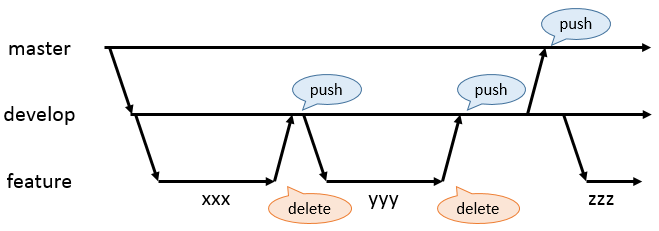

全体像
- git-flowをさらに簡略化し、下図のような運用とする
- 
プロジェクト作成直後
- 一度 master にコミットし、リモートにプッシュする
- master から develop という名前のブランチを作成
- ローカルブランチを develop に切り替える
- develop を リモートにプッシュする
開発中
- develop から feature/xxx という名前のブランチを作成
- xxx は任意文字列 (半角英数及びハイフン)
- タスク単位で開発を区切るのが妥当なので、大抵タスク名が入る
- ローカルブランチを feature/xxx に切り替える
- feature/xxx に適宜コミットしながら開発を進める
- 開発の区切りに達したところで、ローカルブランチを develop に切り替える
- 少なくともユニットテストは通過させておくこと
- アプリケーションが起動できない状態は論外
- feature/xxx の内容を develop にマージした上で、feature/xxx ブランチを削除する
- develop を リモートにプッシュする
開発完了
- 結合テスト完了時点で、上記に倣って develop をリモートにプッシュする
- ローカルブランチを master に切り替える
- develop の内容を master にマージする
- master を リモートにプッシュする